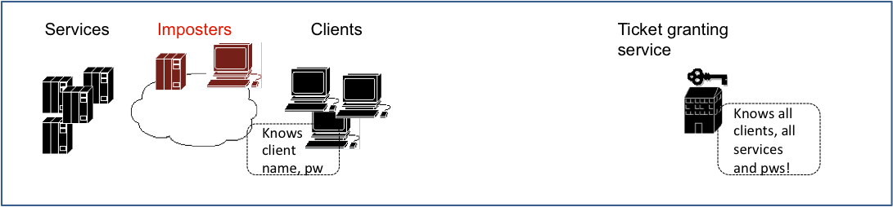

Kerberos introduces a concept of a trusted 3rd party which maintains a centralized database of passwords for clients and services. The trusted authority forms the basis for supporting single sign-on and secure authentication for both clients and services. Any attack on the trusted service would compromise all the passwords and hence this should be kept secure, should ideally not host any other network service.
Client connects with the ticket granting service to authenticate. It sends its username, network address but no password. TGS validates network address, creates a "metaticket" which grants access to TGS, encrypts it with client's password and sends it back as a response. The metaticket acts as a gateway to obtain actual service tickets. It's reusable but valid for a fixed duration to reduce the possbility of attack.
To access a service, client uses the metaticket to request TGS for the actual service ticket. It sends its username, network address, service name, all encrypted with the TG key obtained as part of the metaticket. It gets back (a) real time secret, session encrypted with TG key (b) ticket for the service encrypted with server pw.
Client uses the real time secret and encrypts an authenticator containing its name and network address. It sends this authenticator and the service ticket obtained earlier to the service. Service first decrypts its ticket and obtains the session key. It then decrypts the authenticator with this session key and verifies client information. It then encrypts an ACK with the session key and sends back as an response. Client receives the ACK, decrypts with the session key to verify.